배관기능장 (2014-04-06 기출문제)
1과목: 임의구분
1. 요리장의 배수에 섞여 있는 지방분이 배수관으로 흐르지 않게 하기 위하여 설치하는 것은?
- 가솔린 트랩
- 스트레이너
- 그리스 트랩
- 메인 트랩
(정답률: 82%)

2. 집진장치 중 일반적으로 집진효율이 가장 좋은 것은?
- 전기 집진장치
- 중력식 집진장치
- 원심력식 집진장치
- 관성력식 집진장치
(정답률: 92%)
3. 스패너나 렌치 사용 시 안전상 주의사항으로 틀린 것은?
- 해머 대용으로 사용치 말 것
- 너트에 맞는 것을 사용할 것
- 스패너나 렌치는 뒤로 밀어 돌릴 것
- 파이프 렌치를 사용할 때는 정지장치를 확실히 할 것
(정답률: 94%)
4. 공동현상의 발생조건이 아닌 것은?
- 흡입관경이 작을 때
- 과속으로 유량 증가 시
- 관로 내의 온도 저하 시
- 흡입양정이 지나치게 길 때
(정답률: 83%)
5. 미리 정해진 순서 또는 조건에 따라 제어의 각 단계를 순차적으로 행하는 제어에 속하지 않는 것은?
- 추치제어
- 시한제어
- 순서제어
- 조건제어
(정답률: 73%)
6. 가스관의 부설 위치에 따른 명칭을 설명한 것으로 잘못된 것은?
- 실내관이란 중간밸브에서 연소기 콕까지의 배관을 말한다.
- 옥외내관이란 소유자의 토지 경계에서 연소기까지의 배관을 말한다.
- 본관이란 가스 제조공장의 부지 경계에서 정압기까지의 배관을 말한다.
- 공급관이란 정압기에서 가스 사용자가 점유하고 있는 토지 경계까지 이르는 배관을 말한다.
(정답률: 72%)
7. 토치램프의 취급에 관한 안전사항으로 옳지 않은 것은?
- 작업 전에 소화기, 모래 등을 준비한다.
- 사용하기 전에 주변에 인화물질이 없는지 확인한다.
- 각 부분에서 가솔린의 누설 여부를 확인한 후 점화한다.
- 작업 중 가솔린의 주입 시에는 램프의 불만 꺼져 있는지 확인한 후 주입한다.
(정답률: 96%)
8. 난방시설에서 전열에 의한 손실열량이 11.63kW이고 환기손실열량이 3.14kW인 곳에 증기난방을 할 경우 소요되는 주철제 방열기는 몇 절이 필요한가? (단, 주철제 방열기 1절의 방열 표면적은 0.28m2이고 방열량은 0.76kW/m2이다.)
- 20절
- 34절
- 50절
- 70절
(정답률: 82%)
9. 열전온도계의 열전대의 구비조건이 아닌 것은?
- 장시간 사용하여도 오차가 없도록 내구성이 있어야 한다.
- 재현성이 낮고 전기저항, 온도계수, 열전도율이 작아야 한다.
- 고온에서도 기계적 강도가 크고 내열성, 내식성이 있어야 한다.
- 취급과 관리가 용이하며 가격이 싸고 동일 특성을 얻기 쉬워야 한다.
(정답률: 85%)
10. 기수혼합급탕방식에서 물의 온도를 자동으로 조정하기 위해 설치하는 것은?
- 자동온수혼합기
- 자동온도조정기
- 자동온도냉수조정기
- 자동온도조정사일런서
(정답률: 88%)
11. 건축물의 외벽, 창, 지분 등에 설치하여 인접 건물에 화재가 발생하였을 때 수막을 형성함으로써 화재의 확산을 방지하는 소화설비는?
- 드렌처(drencher)
- 히트 펌프(heat pump)
- 스프링클러(sprinkler)
- 사이어미즈 커넥션(siamese connection)
(정답률: 89%)
12. 화학공업 배관재료 선정 시 고려하여야 할 화학반응 중 물질에 따른 부식이 잘못 연결된 것은?
- H2-탈탄
- H2S-용해
- NH3-질화
- CO-카보닐화
(정답률: 64%)
13. 기기 및 배관 라인의 점검에 관한 설명으로 옳지 않은 것은?
- 드레인 배출을 점검하지 않는다.
- 도면과 시방서의 기준에 맞도록 설비되었는가 확인한다.
- 각 배관의 구배는 완만하고 에어포켓부는 없는지 확인한다.
- 각종 기기 및 자재와 부속품은 시방서에 명시된 규격품인지 확인한다.
(정답률: 94%)
14. 자동제어에서 미분동작이란?
- 편차의 크기에 비례해서 조작량을 변화시키는 동작이다.
- 제어 편차량에 비례한 속도로 조작량을 변화시키는 동작이다.
- 편차가 변하는 속도에 비례해서 조작량을 변화시키는 동작이다.
- 조작량이 동작신호에 응해서 두 개의 정해진 값의 어떤 것을 선택하는 동작이다.
(정답률: 59%)
15. 자동화시스템에서 크게 회전운동과 선형운동으로 구분되며 사용하는 에너지에 따라 공압식, 유압식, 전기식 등으로 세분하는 자동화의 5대 요소 중 하나인 것은?
- 센서(sensor)
- 액추에이터(actuator)
- 네트워크(network)
- 소프트웨어(software)
(정답률: 91%)
16. 자동제어에서 인디셜(Indicial) 응답이라고도 하는 것은?
- 스텝 응답
- 주파수 응답
- 자기평형성
- 정현파 응답
(정답률: 88%)
17. 아크용접 중 아크광선에 의해 눈이 충혈되었을 때 취해야 할 조치로 가장 적절한 것은?
- 소금물로 씻어 낸 후 작업한다.
- 구급 안약을 눈에 넣고 작업한다.
- 냉습포로 찜질을 하면서 안정을 취한다.
- 온수로 얼굴을 닦은 후 눈을 껌뻑이면서 눈동자를 자유스럽게 한다.
(정답률: 94%)
18. 높이 6m인 곳에 플러시밸브를 설치하고자 한다. 배관 길이가 18m이고 플러시밸브에서 최저수압 0.07MPa을 요구할 때 필요한 수압을 얼마인가? (단. 관 마찰손실수두는 200mmAq/m로 한다.)
- 0.164MPa
- 0.241MPa
- 0.636MPa
- 0.706MPa
(정답률: 49%)
19. 기송배관의 일반적인 3가지 형식이 아닌 것은?
- 진공식 배관
- 압송식 배관
- 수송식 배관
- 진공 압송식 배관
(정답률: 87%)
20. 배관 배열의 기본사항에 관한 설명으로 옳지 않은 것은?
- 배관은 가급적 그룹화 되게 한다.
- 배관은 가급적 최단거리로 하고 굴곡부를 많게 한다.
- 고온, 고유속의 배관은 티(T) 분기부가 가능한 적도록 배치한다.
- 배관에 불필요한 에어포켓이나 드레인 포켓이 생기지 않도록 한다.
(정답률: 91%)
2과목: 임의구분
21. 동관이나 동합금관에 관한 설명으로 옳지 않은 것은?
- 담수에 대한 내식성은 크나, 극연수에는 부식된다.
- 아세톤, 에테르, 프레온 가스, 파라핀 등에는 침식되지 않는다.
- 타프피치 동관의 순도는 99.99% 이상으로 전기기기의 재료로 많이 사용된다.
- 두께별 분류에서 K형이 가장 얇고, M형은 보통 두께이고, N형이 가장 두껍다.
(정답률: 82%)
22. 덕타일 주철관의 설명으로 옳지 않은 것은?
- 구상흑연 주철관이라고도 한다.
- 변형에 대한 가요성과 가공성은 없다.
- 보통 회주철관보다 관의 수명이 길다.
- 강관과 같이 높은 강도와 인성이 있다.
(정답률: 87%)
23. 덕트 내의 소음 방지법을 설명한 것으로 옳지 않은 것은?
- 댐퍼 취출구에 흡음재를 부착한다.
- 덕트의 도중에 흡음재를 부착한다.
- 송풍기 출구 부근에 플리넘 챔버를 장치한다.
- 덕트의 적당한 곳에 슬라이드 댐퍼를 설치한다.
(정답률: 74%)
24. 배관의 하중을 아래에서 위로 떠받치는 배관의 지지 장치는?
- 행거
- 브레이스
- 서포트
- 레스트레인트
(정답률: 78%)
25. 동관 이음쇠의 종류와 기호표시가 잘못된 것은?
- C : 이음쇠 내로 관이 들어가는 접합형태
- Ftg:이음쇠 외부로 관리 들어가는 형태
- F : 이음쇠 안쪽에 관용나사가 가공된 형태
- C×F : 이음쇠 외부에 관용나사가 가공된 형태
(정답률: 78%)
26. 급수배관을 완료하고 수압시험을 하기 위한 조치사항으로 옳지 않은 것은?
- 배관의 개구부는 플러그 등으로 막았다.
- 배관의 중간에 있는 분기밸브는 모두 열어 놓았다.
- 관내에 물을 채울 때는 공기빼기용 밸브를 막았다.
- 수직배관의 경우 최상부에 공기빼기 장치를 설치하였다.
(정답률: 79%)
27. 체크밸브에 관한 설명으로 옳지 않은 것은?
- 체크밸브는 유체의 역류를 방지한다.
- 리프트식은 수직배관에만 사용된다.
- 스윙식은 수평, 수직배관 어느 곳에나 사용된다.
- 풋형 체크밸브는 펌프운전 중에 흡입측 배관 내 물이 없어지는 것을 방지하기 위해 사용된다.
(정답률: 67%)
28. 신축이음쇠 중 평면상의 변위뿐 아니라 입체적인 변위까지도 안전하게 흡수할 수 있는 이음쇠는?
- 루프형 신축이음쇠
- 스위블형 신축이음쇠
- 벨로스형 신축이음쇠
- 볼조인트형 신축이음쇠
(정답률: 54%)
29. 플라스틱 패킹에 관한 설명으로 가장 거리가 먼 것은?
- 편조 패킹과는 달리 구조는 일정한 조직을 가지고 있지 않다.
- 구조상 단단하므로 고온, 고압의 증기배관에 가장 적합하다.
- 기밀효과가 좋고 저마찰성, 치수의 융통성 등의 장점이 있다.
- 석면섬유에 바인더와 윤활제를 가해 끈 또는 링 모양으로 성형한 가소성 패킹이다.
(정답률: 83%)
30. 한국산업표준(KS)에서 제시하는 강관의 기호와 그 명칭이 바르게 연결된 것은?
- SPPS:일반 배관용 탄소강관
- SPHT:저온 배관용 탄소강관
- SPPH:고압 배관용 탄소강관
- SPLT:저압 배관용 탄소강관
(정답률: 76%)
31. 플랜지 시트 모양에 따른 분류 중 대평면 시트의 호칭 압력은 몇 kgf/cm2이하인가?
- 16
- 36
- 53
- 63
(정답률: 59%)
32. 내경 2m, 길이 10m인 원통형 탱크를 수직으로 세워 놓고 물을 채울 때 필요한 물의 양은 몇 m3인가?
- 7.85
- 15.7
- 31.4
- 62.8m3
(정답률: 54%)
33. 증기와 응축수의 열역학적 특성에 따라 작동되는 증기트랩이 아닌 것은?
- 플로트형 트랩
- 오리피스형 트랩
- 디스크형 트랩
- 바이패스형 트랩
(정답률: 38%)
34. 다음 중 폴리에틸렌관의 종류에 속하지 않는 것은?
- 수도용 폴리에틸렌관
- 증기용 폴리에틸렌관
- 일반용 폴리에틸렌관
- 가스용 폴리에틸렌관
(정답률: 75%)
35. 폴리에틸렌관의 용착슬리브 이음 시 가열 지그를 이용한 용착(가열)온도로 적합한 온도는 약 몇 ℃정도인가?
- 100℃
- 150℃
- 200℃
- 300℃
(정답률: 60%)
36. 용접시간 10분 중 아크발생시간이 8분, 무부하시간이 2분이었다면 이 용접기의 사용률은 얼마인가?
- 50%
- 60%
- 70%
- 80%
(정답률: 86%)
37. 주철관 이음 시 스테인리스 커플링과 고무링만으로 쉽게 이음할 수 있는 접합법은?
- 노허브 이음
- 빅토릭 이음
- 타이톤 이음
- 플랜지 이음
(정답률: 84%)
38. 다음 중 가스절단이 가장 잘되는 재료는?
- 연강
- 비철금속
- 주철
- 스테인리스
(정답률: 82%)
39. 주철관 이음 중 기계식 이음(mechanical joint)에 관한 설명으로 옳지 않은 것은?
- 기밀성이 불량하다.
- 굽힘성이 풍부하므로 누수가 없다.
- 소켓이음과 플랜지이음의 복합형이다.
- 간단한 공구로 신속하게 이음이 되며, 숙련공이 필요하지 않다.
(정답률: 75%)
40. 석면 시멘트관의 심플렉스 이음에 관한 설명으로 옳지 않은 것은?
- 수밀성과 굽힘성은 우수하지만 내식성은 약하다.
- 호칭지름 75~500mm의 지름이 작은 관에 많이 사용된다.
- 접합에 끼워 넣는 공구로는 프릭션 플러(friction puller)를 사용한다.
- 칼라 속에 2개의 고무링을 넣고 이음하며 고무 가스킷이음이라고도 한다.
(정답률: 65%)
3과목: 임의구분
41. 용접이음의 효율을 나타내는 공식은?
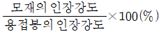
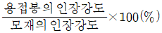
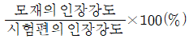
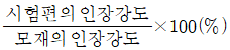
(정답률: 60%)
42. 다음 중 SI 기본단위가 아닌 것은?
- 시간(s)
- 길이(m)
- 질량(kg)
- 압력(Pa)
(정답률: 85%)
43. CO2 아크 용접법 중에서 비용극식 용접에 해당하는 것은?
- 순 CO2법
- 탄소 아크법
- 혼합 가스법
- 아코스 아크법
(정답률: 79%)
44. 다음 중 동관용 공구가 아닌 것은?
- 티뽑기
- 사이징 툴
- 익스팬더
- 전용 압착공구
(정답률: 70%)
45. 배관 내의 가스압력이 196kPa일 때 체적이 0.01m3, 온도가 27℃이었다. 이 가스가 동일 압력에서 체적이 0.015m3으로 변하였다면 이 때 온도는 몇 ℃가 되는가? (단, 이 가스는 이상기체라고 가정한다.)
- 27℃
- 127℃
- 177℃
- 450℃
(정답률: 64%)
46. 강관의 대구경관 조립에 사용하는 파이프렌티는?
- 체인 파이프렌치
- 업셋 파이프렌치
- 링크형 파이프렌치
- 스트레이트 파이프렌치
(정답률: 76%)
47. 다음 평면도를 입체도로 그린 것은?
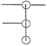
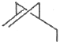
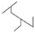
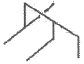
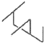
(정답률: 81%)
48. 플랜트 배관설비 도면에서 배관도의 일부를 인출, 발췌하여 그린 도면의 명칭은?
- 평면 배관도
- 입체 배관도
- 입면 배관도
- 부분 배관도
(정답률: 95%)
49. 다음과 같이 배관라인번호를 나타낼 때 사용하는 기호에 대한 명칭으로 옳지 않은 것은?
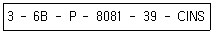
- 6B:배관 호칭지름
- P:유체기호
- 8081:배관번호
- CINS:배관재료
(정답률: 85%)
50. 다음 용접기호를 바르게 표현한 것은?
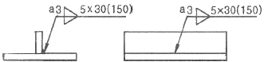
- 용접길이 30mm, 용접부 개수 3
- 용접길이 30mm, 용접부 개수 5
- 용접길이 150m, 용접부 개수 3
- 용접길이 150mm, 용접부 개수 5
(정답률: 86%)
51. 원이나 원호 이외의 불규칙한 곡선을 그릴 때 적당한 제도용구는?
- 줄자
- 운형자
- 눈금자
- 삼각자
(정답률: 92%)
52. 파이프의 외경이 1000mm이고 TOP EL30000이고, 또 다른 파이프 외경이 500mm이고 BOP EL20000이면 두 파이프의 중심선에서의 높이차는 몇 mm인가?
- 6000
- 7000
- 8500
- 9250
(정답률: 74%)
53. 관 결합 방식의 표시 방법으로 옳은 것은?
- 용접식 :
- 플랜지식 :
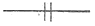
- 소켓식 :
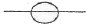
- 유니언식 :
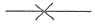
(정답률: 91%)
54. 그림과 같은 배관 도시 기호의 의미로 옳은 것은?
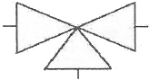
- 콕
- 3 방향 밸브
- 파이프 슈
- 버터플라이 밸브
(정답률: 91%)
55. 근래 인강공학이 여러 분야에서 크게 기여하고 있다. 다음 중 어느 단계에서 인간공학적 지식이 고려됨으로서 기업에 가장 큰 이익을 줄 수 있는가?
- 제품의 개발단계
- 제품의 구매단계
- 제품의 사용단계
- 작업자의 채용단계
(정답률: 83%)
56. 전수검사와 샘플링검사에 관한 설명으로 가장 올바른 것은?
- 파괴검사의 경우에는 전수검사를 적용한다.
- 전수검사가 일반적으로 샘플링검사보다 품질향상에 자극을 더 준다.
- 검사항목이 많을 경우 전수검사보다 샘플링검사가 유리하다.
- 샘플링검사는 부적합품이 섞여 들어가서는 안되는 경우에 적용한다.
(정답률: 85%)
57. 다음 [표]를 참조하여 5개월 단순이동평균법으로 7월의 수요를 예측하면 몇 개인가?
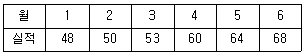
- 55개
- 57개
- 58개
- 59개
(정답률: 64%)
58. 도수분포표에서 도수가 최대인 계급의 대푯값을 정확히 표현한 통계량은?
- 중위수
- 시료평균
- 최빈수
- 미드-레인지(Mid-range)
(정답률: 82%)
59. 다음 중 두 관리도가 모두 포아송 분포를 따르는 것은?
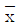
관리도, R 관리도- c 관리도, u 관리도
- np 관리도, p 관리도
- c 관리도, p 관리도
(정답률: 62%)
60. 다음 중 반즈(Ralph M. Barnes)가 제시한 동작경제원칙에 해당되지 않는 것은?
- 표준작업의 원칙
- 신체의 사용에 관한 원칙
- 작업장의 배치에 관한 원칙
- 공구 및 설비의 디자인의 관한 원칙
(정답률: 66%)